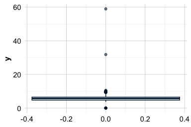
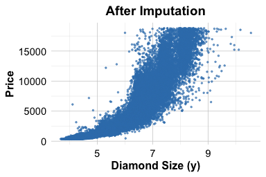
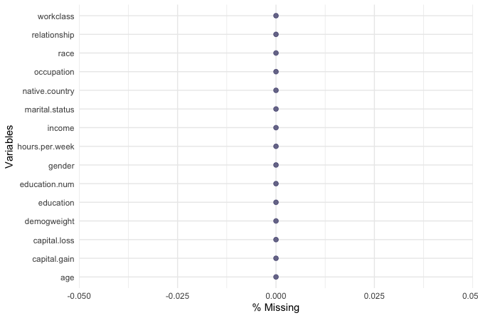
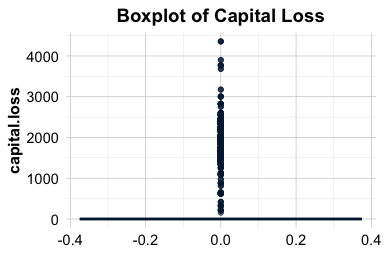
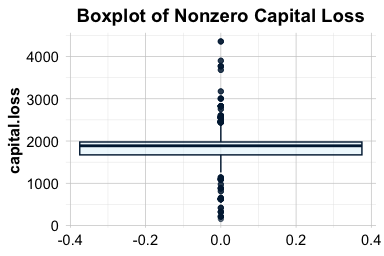
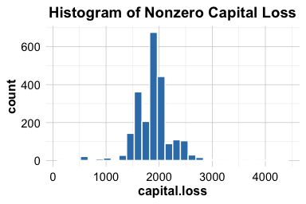

3 Data Preparation in Practice: From Raw Data to Insight
The real world is messy.
In real-world settings, data rarely arrives in a clean, analysis-ready format. It often contains missing values, extreme observations, and inconsistent entries that reflect how data is collected in operational systems rather than designed for analysis. By contrast, many datasets encountered in teaching platforms or competitions are carefully curated, with well-defined targets and minimal preprocessing required. While such datasets are valuable for learning, they can give a misleading impression of what data science work typically involves.
This chapter focuses on one of the most underestimated yet indispensable stages of the Data Science Workflow: data preparation. Regardless of how sophisticated a statistical method or machine learning algorithm may be, its results are only as reliable as the data on which it is trained. Preparing data is therefore not a peripheral technical task but a core analytical activity that directly shapes model performance, interpretability, and credibility.
Throughout this chapter, you will develop practical strategies for identifying irregularities in data and deciding how they should be handled. Using visual diagnostics, summary statistics, and principled reasoning, you will learn how preparation choices, such as outlier treatment and missing-value handling, influence both analytical conclusions and downstream modeling results.
Several aspects of data preparation, including outlier detection and missing-value handling, naturally overlap with Exploratory Data Analysis (Chapter 4) and Data Setup for Modeling (Chapter 6). In practice, these stages are revisited iteratively rather than executed in a strict linear sequence.
What This Chapter Covers
This chapter introduces the essential techniques for transforming raw data into a format suitable for analysis and modeling. You will learn how to:
identify and detect outliers using visual and summary-based techniques;
decide how to handle outliers through removal, transformation, or imputation;
identify missing values, including those encoded using nonstandard placeholders;
apply principled imputation strategies to numerical and categorical variables;
prepare real-world data for modeling through a complete, end-to-end case study.
We begin by working with the diamonds dataset to demonstrate core data preparation techniques in a controlled setting. The chapter then progresses to a comprehensive case study based on the real-world adult income dataset, where these techniques are applied to a realistic prediction task. Together, these examples illustrate how thoughtful data preparation transforms raw data into a reliable foundation for meaningful insight and machine learning models.
3.1 Key Considerations for Data Preparation
Before working with a specific dataset, it is useful to clarify the principles that guide data preparation decisions in practice. Across applications and domains, effective data preparation is shaped by three closely related considerations: data quality, feature engineering, and variable transformation.
First, data quality is essential. Data must be accurate, internally consistent, and free from values that would distort analysis. This includes identifying missing values, detecting outliers, and resolving implausible or inconsistent entries that could bias results or reduce model performance.
Second, feature engineering can substantially improve the usefulness of a dataset. Rather than relying solely on raw measurements, it is often beneficial to construct derived variables that better reflect the underlying phenomenon of interest. For example, combining multiple related measurements into a single, interpretable feature can provide a clearer signal for modeling than treating each input separately.
Finally, variables must be transformed into formats that are appropriate for modeling. Categorical features need to be encoded in ways that respect their structure and meaning, while numerical features may require scaling to ensure they contribute appropriately in models that rely on distance or gradient-based optimization. These transformations are discussed in greater detail in Chapter 6.
Together, these considerations provide a practical lens for the data preparation steps that follow. Rather than applying preprocessing techniques mechanically, they encourage decisions that are aligned with both the structure of the data and the goals of the analysis.
3.2 Data Preparation in Action: The diamonds Dataset
How can we quantify the value of a diamond? Why do two stones that appear nearly identical command markedly different prices? In this section, we bring the concepts of data preparation to life using the diamonds dataset, a rich and structured collection of gem characteristics provided by the ggplot2 package. This dataset serves as a practical setting for exploring how data preparation supports meaningful analysis.
Our central goal is to understand how features such as carat, cut, color, and clarity relate to diamond prices. Before applying any cleaning or transformation steps, however, we must first clarify the analytical objective and the questions that guide it. Effective data preparation begins with a clear understanding of the problem the data is meant to address.
We focus on three guiding questions: which features are most informative for explaining or predicting diamond price; whether systematic pricing patterns emerge across attributes such as carat weight or cut quality; and whether the dataset contains irregularities, including outliers or inconsistent values, that should be addressed prior to modeling.
From a business perspective, answering these questions supports more informed pricing and inventory decisions for jewelers and online retailers. From a data science perspective, it ensures that data preparation choices are aligned with the modeling task rather than applied mechanically. This connection between domain understanding and technical preparation is what makes data preparation both effective and consequential.
Later in the book, we return to the diamonds dataset in Chapter 10, where the features prepared in this chapter are used to build a predictive regression model, completing the progression from raw data to actionable insight.
Overview of the diamonds Dataset
We use the diamonds dataset from the ggplot2 package, which contains detailed information on the physical characteristics and quality ratings of individual diamonds. Each row represents a single diamond, described by variables such as carat weight, cut, color, clarity, and price. Although the dataset is relatively clean, it provides a realistic setting for practicing key data preparation techniques that arise in applied data science. A natural first step in data preparation is to load the dataset and inspect its structure to understand what information is available and how it is represented.
To obtain an overview of the dataset’s structure, we use the str() function:
str(diamonds)
tibble [53,940 × 10] (S3: tbl_df/tbl/data.frame)
$ carat : num [1:53940] 0.23 0.21 0.23 0.29 0.31 0.24 0.24 0.26 0.22 0.23 ...
$ cut : Ord.factor w/ 5 levels "Fair"<"Good"<..: 5 4 2 4 2 3 3 3 1 3 ...
$ color : Ord.factor w/ 7 levels "D"<"E"<"F"<"G"<..: 2 2 2 6 7 7 6 5 2 5 ...
$ clarity: Ord.factor w/ 8 levels "I1"<"SI2"<"SI1"<..: 2 3 5 4 2 6 7 3 4 5 ...
$ depth : num [1:53940] 61.5 59.8 56.9 62.4 63.3 62.8 62.3 61.9 65.1 59.4 ...
$ table : num [1:53940] 55 61 65 58 58 57 57 55 61 61 ...
$ price : int [1:53940] 326 326 327 334 335 336 336 337 337 338 ...
$ x : num [1:53940] 3.95 3.89 4.05 4.2 4.34 3.94 3.95 4.07 3.87 4 ...
$ y : num [1:53940] 3.98 3.84 4.07 4.23 4.35 3.96 3.98 4.11 3.78 4.05 ...
$ z : num [1:53940] 2.43 2.31 2.31 2.63 2.75 2.48 2.47 2.53 2.49 2.39 ...This output reveals that the dataset contains 53940 observations and 10 variables. It includes numerical features such as carat, price, and the physical dimensions x, y, and z, alongside categorical features describing quality attributes, including cut, color, and clarity. These variables form the basis for the price modeling task revisited in Chapter 10. The key variables in the dataset are summarized below:
-
carat: weight of the diamond (approximately 0.2 to 5.01); -
cut: quality of the cut (Fair, Good, Very Good, Premium, Ideal); -
color: color grade, from D (most colorless) to J (least colorless); -
clarity: clarity grade, from I1 (least clear) to IF (flawless); -
depth: total depth percentage, calculated as2 * z / (x + y); -
table: width of the top facet relative to the widest point; -
x,y,z: physical dimensions in millimeters; -
price: price in US dollars.
Before cleaning or transforming these variables, it is important to understand how they are represented and what type of information they encode. Different feature types require different preparation strategies. In the next section, we examine how the variables in the diamonds dataset are structured and classified.
3.3 Identifying Feature Types
Before detecting outliers or encoding variables, it is essential to understand the types of features present in a dataset. Whether a variable is numerical or categorical, and how it is structured within these broad groups, determines which preprocessing steps are appropriate and how models interpret the data. Figure 3.1 summarizes the main feature types commonly encountered in data science.

Features are commonly grouped into two broad categories: quantitative (numerical) and categorical (qualitative), each with important subtypes.
Quantitative (Numerical) features represent measurable quantities:
Continuous features can take any value within a range. In the
diamondsdataset, variables such ascarat,price, and the physical dimensionsx,y, andzfall into this category.Discrete features take on countable values, typically integers. While not present in the
diamondsdataset, examples include counts such as the number of purchases or visits.
Categorical (Qualitative) features describe group membership:
Ordinal features have a meaningful order, although the spacing between levels is not necessarily uniform. In the
diamondsdataset, variables such ascut,color, andclarityare ordinal. For instance,colorranges from D (most colorless) to J (least colorless).Nominal features represent categories with no inherent order, such as product types or blood groups.
Binary features consist of exactly two categories, such as “yes”/“no” or “male”/“female”, and are often encoded numerically as 0 and 1.
Although the diamonds dataset does not include discrete, nominal, or binary features, these variable types are common in applied data science and require distinct preparation strategies.
In R, the way a variable is stored affects how it is handled during analysis. Continuous variables are typically stored as numeric, discrete variables as integer, and categorical variables as factor objects, which may be either ordered or unordered. It is therefore important to verify how R interprets each variable. For example, a feature that is conceptually ordinal may be treated as an unordered factor unless it is explicitly declared as ordered = TRUE.
With the feature types clearly identified, we can now proceed to the next stage of data preparation, beginning with the detection of outliers that may distort analysis and modeling results.
3.4 Outliers: What They Are and Why They Matter
Outliers are observations that deviate markedly from the overall pattern of a dataset. They may arise from data entry errors, unusual measurement conditions, or genuinely rare but informative events. Regardless of their origin, outliers can have a disproportionate impact on data analysis, influencing summary statistics, distorting visualizations, and affecting the behavior of machine learning models.
In applied settings, the presence of outliers often carries important implications. An unusually large transaction may signal fraudulent activity, an extreme laboratory measurement could reflect a rare medical condition or a faulty instrument, and atypical sensor readings may indicate process instability or equipment failure. Such examples illustrate that outliers are not inherently problematic but often require careful interpretation.
Not all outliers should be treated as errors. Some represent meaningful exceptions that provide valuable insight, while others reflect noise or measurement issues. Deciding how to interpret outliers therefore requires both statistical reasoning and domain knowledge. Treating all extreme values uniformly, either by automatic removal or unquestioned retention, can lead to misleading conclusions.
Outliers are often first identified using visual tools such as boxplots, histograms, and scatter plots, which provide an intuitive view of how observations are distributed. More formal criteria, including z-scores and interquartile range (IQR) thresholds, offer complementary quantitative perspectives. In the next section, we use visual diagnostics to examine how outliers appear in the diamonds dataset and why they matter for subsequent analysis.
3.5 Spotting Outliers with Visual Tools
Visualization provides a natural starting point for identifying outliers, offering an intuitive view of how observations are distributed and where extreme values occur. Visual tools make it easier to distinguish between typical variation and values that may warrant closer scrutiny, whether due to data entry errors, unusual measurement conditions, or genuinely rare cases.
In this section, we illustrate visual outlier detection using the y variable (diamond width) from the diamonds dataset. This variable is particularly well suited for demonstration purposes, as it contains values that fall outside the range expected for real diamonds and therefore highlights how visual diagnostics can reveal implausible or extreme observations before formal modeling begins.
Boxplots: Visualizing and Flagging Outliers
Boxplots provide a concise visual summary of a variable’s distribution by displaying its central tendency, spread, and potential extreme values. They are particularly useful for identifying observations that fall far outside the typical range of the data. As illustrated in Figure 3.2, boxplots represent the interquartile range (IQR) and mark observations lying beyond 1.5 times the IQR from the quartiles as potential outliers.
To illustrate this in practice, we apply boxplots to the y variable (diamond width) in the diamonds dataset:
ggplot(data = diamonds) +
geom_boxplot(aes(y = y)) +
labs(title = "Boxplot of Diamond Width (Full Scale)", y = "Diamond Width (mm)")
ggplot(data = diamonds) +
geom_boxplot(aes(y = y)) +
coord_cartesian(ylim = c(0, 15)) +
labs(title = "Boxplot of Diamond Width (Zoomed View)", y = "Diamond Width (mm)")

The full-scale boxplot shows that a small number of extreme values stretch the vertical axis, compressing the bulk of the distribution and making typical variation difficult to assess. The zoomed view reveals that most diamond widths lie between approximately 2 and 6 mm, with a limited number of observations falling well outside this range.
This contrast illustrates both the strength and limitation of boxplots: they efficiently flag extreme values, but extreme observations can dominate the visual scale. In practice, combining full-scale and zoomed views helps distinguish between typical variation and values that may require further investigation before modeling.
Practice: Apply the same boxplot-based outlier detection approach to the variables
xandz, which represent the length and depth of diamonds. Create boxplots using both the full range of values and a zoomed-in view, and compare the resulting distributions with those observed fory. Do these variables exhibit similar extreme values or patterns that warrant further investigation?
Histograms: Revealing Outlier Patterns
Histograms provide a complementary perspective to boxplots by displaying how observations are distributed across value ranges. They make it easier to assess the overall shape of a variable, including skewness, concentration, and the relative frequency of extreme values, which may be less apparent in summary-based plots.
The histogram below shows the distribution of the y variable (diamond width) using bins of width 0.5:
ggplot(data = diamonds) +
geom_histogram(aes(x = y), binwidth = 0.5)
At this scale, most values are concentrated between approximately 2 and 6 mm, while observations at the extremes are compressed and difficult to distinguish. To better examine rare or extreme values, we restrict the vertical axis to a narrower range:
ggplot(data = diamonds) +
geom_histogram(aes(x = y), binwidth = 0.5) +
coord_cartesian(ylim = c(0, 30))
This zoomed view highlights the presence of unusually small and large values that occur infrequently relative to the main body of the data. Such observations may reflect data entry errors or genuinely rare cases and therefore merit closer inspection. Used alongside boxplots, histograms help distinguish between typical variation and values that may influence subsequent analysis or modeling.
Practice: Create histograms for the variables
xandzusing an appropriate bin width. Examine both the full distribution and a zoomed-in view of the frequency axis. How do the distributional shapes and extreme values compare with those observed fory, and do any values appear to warrant further investigation?
Additional Tools for Visual Outlier Detection
Beyond boxplots and histograms, several other visualization tools are useful for identifying potential outliers in different analytical contexts.
Scatter plots are particularly effective for examining relationships between variables and identifying observations that deviate from overall trends, especially in bivariate or multivariate settings. For example, plotting
yagainstpricecan reveal whether extreme widths correspond to unusual prices, a pattern we will revisit later in this chapter.Violin plots combine distributional shape with summary statistics, allowing extreme values to be viewed in the context of the full density.
Density plots offer a smoothed representation of the data distribution, making long tails, skewness, or multiple modes easier to detect.
These tools are most valuable during the early stages of analysis, when the goal is to scan for irregular patterns or unusual cases. As data dimensionality increases, however, visual inspection alone becomes less effective. In such situations, formal statistical methods provide more systematic and scalable approaches to outlier detection.
Having identified potential outliers using visual diagnostics, the next step is to decide how they should be handled. This involves determining whether extreme values should be retained, transformed, or removed based on their context and their influence on subsequent analysis and modeling.
Practice: Create density plots for the variables
x,y, andzto examine their distributional shapes. Compare the presence of skewness, long tails, or secondary modes across the three dimensions. Do the density plots reveal extreme values or patterns that were less apparent in the boxplots or histograms?
3.6 How to Handle Outliers
Outliers appear in nearly every real-world dataset, and deciding how to handle them is a recurring challenge in data science. An unusually small diamond width or an exceptionally high price may reflect a data entry error, a rare but valid case, or a meaningful signal. Distinguishing between these possibilities requires careful judgment rather than automatic rules.
Once outliers have been identified, either visually or through statistical criteria, the next step is to decide how they should be handled. There is no universally correct strategy. The appropriate response depends on the nature of the outlier, the context in which the data were collected, and the goals of the analysis or model.
Several practical strategies are commonly used, each with its own trade-offs:
Retain the outlier when it represents a valid observation that may carry important information. In fraud detection, for example, extreme values are often precisely the cases of interest. Similarly, in the adult income dataset examined later in this chapter, unusually large values of
capital_gainmay correspond to genuinely high-income individuals. Removing such observations can reduce predictive power or obscure meaningful variation.Replace the outlier with a missing value when there is strong evidence that it is erroneous. Implausible measurements, such as negative carat values or clearly duplicated records, are often best treated as missing. Replacing them with
NAallows for flexible downstream handling, including imputation strategies discussed in the next section.Flag and preserve the outlier by creating an indicator variable (for example,
is_outlier). This approach retains potentially informative observations while allowing models to account for their special status.Apply data transformations, such as logarithmic or square-root transformations, to reduce the influence of extreme values while preserving relative differences. This strategy is particularly useful for skewed numerical variables.
Use modeling techniques that are robust to outliers. Methods such as decision trees, random forests, and median-based estimators are less sensitive to extreme values than models that rely heavily on means or squared errors.
Apply winsorization, which caps extreme values at specified percentiles (for example, the 1st and 99th percentiles). This approach limits the influence of outliers while retaining all observations and can be effective for models that are sensitive to extreme values, such as linear regression.
Remove the outlier only when the value is clearly invalid, cannot be corrected or reasonably imputed, and would otherwise compromise the integrity of the analysis. This option should be considered a last resort rather than a default choice.
In practice, a cautious and informed approach is essential. Automatically removing outliers may simplify analysis but risks discarding rare yet meaningful information. Thoughtful handling, guided by domain knowledge and analytical objectives, helps ensure that the data remain both reliable and informative.
3.7 Outlier Treatment in Action
Having identified potential outliers, we now demonstrate how to handle them in practice using the diamonds dataset. We focus on the y variable, which measures diamond width. As shown earlier, this variable contains implausible values, including widths equal to 0 and values exceeding 30 mm, which are unlikely for real diamonds and are best treated as erroneous measurements.
To address these values, we replace them with missing values (NA) using the dplyr package. This approach preserves the remaining observations while allowing problematic entries to be handled flexibly in subsequent steps.
This transformation creates a modified dataset, diamonds_2, in which implausible values of y have been recoded as missing. All other values remain unchanged. To assess the effect of this operation, we examine a summary of the updated variable:
summary(diamonds_2$y)
Min. 1st Qu. Median Mean 3rd Qu. Max. NA's
3.680 4.720 5.710 5.734 6.540 10.540 9The summary confirms how many values were flagged and illustrates how the range of y has changed. The extreme values no longer dominate the distribution, resulting in a cleaner and more realistic representation of diamond width. With these implausible values removed, the variable is now better suited for further analysis and modeling. In the next section, we address the missing values introduced by this step and demonstrate how they can be imputed using statistically informed methods.
Practice: Apply the same outlier treatment to the variables
xandz, which represent diamond length and depth. Identify any implausible values, replace them withNA, and usesummary()to evaluate the effect of your changes.
3.8 Missing Values: What They Are and Why They Matter
Missing values are not merely blank entries: they often carry important information about how data were collected and where limitations may arise. Incomplete data can obscure patterns, distort statistical summaries, and mislead models if not handled carefully. For this reason, identifying and addressing missing values is a critical step before drawing conclusions or fitting predictive algorithms.
As illustrated by the well-known example of Abraham Wald (Section 2.4), missing data are not always random. Wald’s insight emerged from what was not observed: damage on aircraft that failed to return. In data science, the absence of information can be as informative as its presence, and ignoring this distinction can lead to flawed assumptions and unreliable results.
In R, missing values are typically represented as NA. In practice, however, real-world datasets often encode missingness using special placeholder values such as -1, 999, or 99.9. These codes are easy to overlook and, if left untreated, can quietly undermine analysis. For example, in the cereal dataset from the liver package (Section 13.4), the calories variable uses -1 to indicate missing data. Similarly, in the bank marketing dataset (Section 12.6), the pday variable uses -1 to denote that a client was not previously contacted. Recognizing and recoding such placeholders is therefore an essential first step.
A common but risky response to missing data is to remove incomplete observations. While this approach is simple, it can be highly inefficient. Even modest levels of missingness across multiple variables can lead to substantial data loss. For example, if 5% of values are missing across 30 variables, removing all rows with at least one missing entry may eliminate a large fraction of the dataset. More principled strategies aim to preserve information while limiting bias.
Broadly, two main approaches are used to handle missing data:
Imputation, which replaces missing values with plausible estimates based on observed data, allowing all records to be retained.
Removal, which excludes rows or variables containing missing values and is typically reserved for cases where missingness is extensive or uninformative.
In the sections that follow, we examine how to identify missing values in practice and introduce several imputation techniques that support more complete, reliable, and interpretable analyses.
3.9 Imputation Techniques
Once missing values have been identified, the next step is to choose an appropriate strategy for estimating them. The choice of imputation method depends on the structure of the data, the purpose of the analysis, and the level of complexity that is warranted. Commonly used approaches include the following:
Mean, median, or mode imputation replaces missing values with a single summary statistic. Mean imputation is typically used for approximately symmetric numerical variables, median imputation for skewed distributions, and mode imputation for categorical variables. These methods are simple and efficient but may underestimate variability.
Random sampling imputation replaces missing values by drawing at random from the observed values of the same variable. This approach better preserves the original distribution than mean or median imputation, but it introduces randomness into the dataset.
Predictive imputation estimates missing values using relationships with other variables, for example through linear regression, decision trees, or k-nearest neighbors. These methods are particularly effective when strong associations exist among features.
Multiple imputation creates several completed datasets by repeatedly imputing missing values and then combining results across them. By accounting for uncertainty in the imputed values, this approach is especially useful for statistical inference and uncertainty quantification.
Selecting an imputation strategy involves balancing simplicity, interpretability, and accuracy. For variables with limited missingness and weak dependencies, simple methods may be sufficient. When missingness is more substantial or variables are strongly related, predictive or multiple imputation approaches generally provide more reliable results. In cases where a variable is missing too frequently to be imputed credibly, excluding it or reconsidering its role in the analysis may be appropriate.
In the next subsection, we demonstrate random sampling imputation for its simplicity and illustrative value. In later chapters, including Chapter 13, we revisit imputation using more advanced methods such as Random Forest–based approaches. This progression reflects how data preparation strategies often evolve as analytical demands increase.
Random Sampling Imputation in R
We now demonstrate imputation in practice using the y variable (diamond width) from the diamonds dataset. Implausible values identified earlier, such as widths equal to 0 or exceeding 30 mm, were recoded as missing (NA). The goal here is to replace these missing entries using random sampling imputation, a simple method that draws replacement values from the observed distribution of the same variable.
We use the impute() function from the Hmisc package, which supports several basic imputation strategies through the fun argument. Common options include "mean" and "median" for numerical variables, "mode" for categorical variables, and "random" for random sampling imputation. Each choice reflects a different trade-off. Mean or median imputation is deterministic and easy to interpret but may reduce variability, while random sampling preserves the marginal distribution at the cost of introducing randomness. The choice of method should therefore be guided by the structure of the variable and the goals of the analysis. Here we apply random sampling imputation:
This operation replaces each missing value in y with a randomly selected observed value from the same variable. Random sampling imputation preserves the marginal distribution of the data but introduces randomness into the completed dataset. For this reason, it is most appropriate for exploratory analysis and illustrative purposes rather than final model deployment.
To evaluate the effect of imputation, we compare the relationship between diamond width (y) and price before and after imputation:
ggplot(diamonds) +
geom_point(aes(x = y, y = price), size = 0.1) +
labs(title = "Before Imputation", x = "Diamond Width (y)", y = "Price")
ggplot(diamonds_2) +
geom_point(aes(x = y, y = price), size = 0.1) +
labs(title = "After Imputation", x = "Diamond Width (y)", y = "Price")

The comparison shows that after removing implausible values and imputing missing entries, the overall relationship between diamond width and price is preserved, while extreme artifacts that could distort modeling are removed. This diagnostic step helps assess whether imputation has altered meaningful structure in the data.
Practice: Apply random sampling imputation to the variables
xandz, which represent diamond length and depth. After identifying implausible values and recoding them asNA, impute the missing entries and examine how the relationships with price change.
Other Imputation Approaches
In addition to random sampling, several alternative imputation strategies are commonly used in practice. Simple statistical methods, such as mean, median, or mode imputation, can be applied using the impute() function from the Hmisc package. These approaches are computationally efficient and easy to interpret but rely on strong assumptions and may underestimate variability.
For more flexible predictive imputation, the aregImpute() function in Hmisc offers an extension based on additive regression and bootstrapping. By leveraging relationships among variables, this approach often produces more realistic imputations than single-value replacement, particularly when missingness is moderate and predictors are informative.
When multiple variables contain correlated missing values, multivariate approaches are often preferred. The mice (Multivariate Imputation by Chained Equations) package implements an iterative procedure in which each variable with missing data is modeled conditionally on the others. This framework explicitly accounts for uncertainty in the imputations and is especially useful in complex datasets. In Chapter 13.4, we apply mice() to handle missing values in the cereal dataset, illustrating its use in a realistic data preparation workflow.
Although removing incomplete observations with na.omit() is simple, it is rarely advisable. This strategy can lead to substantial information loss and biased results, particularly when missingness is not random. In most applied settings, thoughtful imputation provides a more reliable foundation for subsequent analysis and modeling.
3.10 Case Study: Preparing Data to Predict High Earners
How can we determine whether an individual earns more than $50,000 per year based on demographic and occupational characteristics? This question arises in a wide range of applied settings, including economic research, policy analysis, and the development of data-driven decision systems.
In this case study, we work with the adult dataset, originally derived from data collected by the US Census Bureau and made available through the liver package. The dataset includes variables such as age, education, marital status, occupation, and income, and it presents many of the data preparation challenges commonly encountered in practice. Our objective is to prepare the data for predicting whether an individual’s annual income exceeds $50,000, rather than to build a predictive model at this stage.
The focus here is therefore on data preparation tasks: identifying and handling missing values, simplifying and encoding categorical variables, and examining numerical features for potential outliers. These steps are essential for ensuring that the dataset is suitable for downstream modeling. In Chapter 11, we return to the adult dataset to construct and evaluate predictive models using decision trees and random forests (see Section 11.5), completing the transition from raw data to model-based decision making.
3.10.1 Overview of the Dataset
The adult dataset is a widely used benchmark in machine learning for studying income prediction based on demographic and occupational characteristics. It reflects many of the data preparation challenges commonly encountered in real-world applications. To begin, we load the dataset from the liver package:
To examine the dataset structure and variable types, we use the str() function:
str(adult)
'data.frame': 48598 obs. of 15 variables:
$ age : int 25 38 28 44 18 34 29 63 24 55 ...
$ workclass : Factor w/ 6 levels "?","Gov","Never-worked",..: 4 4 2 4 1 4 1 5 4 4 ...
$ demogweight : int 226802 89814 336951 160323 103497 198693 227026 104626 369667 104996 ...
$ education : Factor w/ 16 levels "10th","11th",..: 2 12 8 16 16 1 12 15 16 6 ...
$ education_num : int 7 9 12 10 10 6 9 15 10 4 ...
$ marital_status: Factor w/ 5 levels "Divorced","Married",..: 3 2 2 2 3 3 3 2 3 2 ...
$ occupation : Factor w/ 15 levels "?","Adm-clerical",..: 8 6 12 8 1 9 1 11 9 4 ...
$ relationship : Factor w/ 6 levels "Husband","Not-in-family",..: 4 1 1 1 4 2 5 1 5 1 ...
$ race : Factor w/ 5 levels "Amer-Indian-Eskimo",..: 3 5 5 3 5 5 3 5 5 5 ...
$ gender : Factor w/ 2 levels "Female","Male": 2 2 2 2 1 2 2 2 1 2 ...
$ capital_gain : int 0 0 0 7688 0 0 0 3103 0 0 ...
$ capital_loss : int 0 0 0 0 0 0 0 0 0 0 ...
$ hours_per_week: int 40 50 40 40 30 30 40 32 40 10 ...
$ native_country: Factor w/ 41 levels "?","Cambodia",..: 39 39 39 39 39 39 39 39 39 39 ...
$ income : Factor w/ 2 levels "<=50K",">50K": 1 1 2 2 1 1 1 2 1 1 ...The dataset contains 48598 observations and 15 variables. Most variables serve as predictors, while the target variable, income, indicates whether an individual earns more than $50,000 per year (>50K) or not (<=50K). The dataset includes a mixture of numerical and categorical features describing demographic, educational, and economic characteristics.
The main variables are summarized below:
-
age: age in years (numerical); -
workclass: employment type (categorical, 6 levels); -
demogweight: census weighting factor (numerical); -
education: highest educational attainment (categorical, 16 levels); -
education_num: years of education (numerical); -
marital_status: marital status (categorical, 5 levels); -
occupation: job type (categorical, 15 levels); -
relationship: household role (categorical, 6 levels); -
race: racial background (categorical, 5 levels); -
gender: gender identity (categorical, 2 levels); -
capital_gain: annual capital gains (numerical); -
capital_loss: annual capital losses (numerical); -
hours_per_week: weekly working hours (numerical); -
native_country: country of origin (categorical, 42 levels); -
income: income bracket (<=50Kor>50K).
For data preparation purposes, the variables can be grouped as follows. Numerical variables include age, demogweight, education_num, capital_gain, capital_loss, and hours_per_week. The variables gender and income are binary. The variable education is ordinal, with levels ordered from “Preschool” to “Doctorate”. The remaining categorical variables, namely workclass, marital_status, occupation, relationship, race, and native_country, are nominal.
To gain an initial overview of distributions and identify potential issues, we inspect summary statistics using:
summary(adult)
age workclass demogweight education education_num marital_status
Min. :17.0 ? : 2794 Min. : 12285 HS-grad :15750 Min. : 1.00 Divorced : 6613
1st Qu.:28.0 Gov : 6536 1st Qu.: 117550 Some-college:10860 1st Qu.: 9.00 Married :22847
Median :37.0 Never-worked: 10 Median : 178215 Bachelors : 7962 Median :10.00 Never-married:16096
Mean :38.6 Private :33780 Mean : 189685 Masters : 2627 Mean :10.06 Separated : 1526
3rd Qu.:48.0 Self-emp : 5457 3rd Qu.: 237713 Assoc-voc : 2058 3rd Qu.:12.00 Widowed : 1516
Max. :90.0 Without-pay : 21 Max. :1490400 11th : 1812 Max. :16.00
(Other) : 7529
occupation relationship race gender capital_gain
Craft-repair : 6096 Husband :19537 Amer-Indian-Eskimo: 470 Female:16156 Min. : 0.0
Prof-specialty : 6071 Not-in-family :12546 Asian-Pac-Islander: 1504 Male :32442 1st Qu.: 0.0
Exec-managerial: 6019 Other-relative: 1506 Black : 4675 Median : 0.0
Adm-clerical : 5603 Own-child : 7577 Other : 403 Mean : 582.4
Sales : 5470 Unmarried : 5118 White :41546 3rd Qu.: 0.0
Other-service : 4920 Wife : 2314 Max. :41310.0
(Other) :14419
capital_loss hours_per_week native_country income
Min. : 0.00 Min. : 1.00 United-States:43613 <=50K:37155
1st Qu.: 0.00 1st Qu.:40.00 Mexico : 949 >50K :11443
Median : 0.00 Median :40.00 ? : 847
Mean : 87.94 Mean :40.37 Philippines : 292
3rd Qu.: 0.00 3rd Qu.:45.00 Germany : 206
Max. :4356.00 Max. :99.00 Puerto-Rico : 184
(Other) : 2507This overview provides the starting point for the data preparation steps that follow. We begin by identifying and handling missing values, an essential task for ensuring the completeness and reliability of the dataset before modeling.
3.10.2 Handling Missing Values
Inspection of the dataset using summary() reveals that three variables, workclass, occupation, and native_country, contain missing entries. In this dataset, however, missing values are not encoded as NA but as the string "?", a placeholder commonly used in public datasets such as those from the UCI Machine Learning Repository. Because R does not automatically treat "?" as missing, these values must be recoded explicitly:
adult[adult == "?"] <- NAThis command replaces all occurrences of the string "?" in the dataset with NA. The logical expression adult == "?" creates a matrix of TRUE and FALSE values, indicating where the placeholder appears. Assigning NA to these positions ensures that R correctly recognizes the affected entries as missing values in subsequent analyses.
After recoding, we apply droplevels() to remove unused factor levels. This step helps avoid complications in later stages, particularly when encoding categorical variables for modeling:
adult <- droplevels(adult)To assess the extent of missingness, we visualize missing values using the gg_miss_var() function from the naniar package, which displays both counts and percentages of missing entries by variable:
library(naniar)
gg_miss_var(adult, show_pct = TRUE)
The resulting plot confirms that missing values occur only in three variables: workclass with 2794 entries, occupation with 2804 entries, and native_country with 847 entries.
Because the proportion of missing values is small, we choose to impute these entries rather than remove incomplete observations, which would lead to unnecessary information loss. To preserve the empirical distribution of each variable, we apply random sampling imputation using the impute() function from the Hmisc package:
Finally, we re-examine the pattern of missingness to confirm that all missing values have been addressed:
gg_miss_var(adult, show_pct = TRUE)
With missing values handled, the dataset is now complete and ready for the next stage of preparation: simplifying and encoding categorical features for modeling.
Practice: Replace the random sampling imputation used above with an alternative strategy, such as mode imputation for the categorical variables
workclass,occupation, andnative_country. Compare the resulting category frequencies with those obtained using random sampling. How do different imputation choices affect the distribution of these variables, and what implications might this have for downstream modeling?
Preparing Categorical Features
Categorical variables with many distinct levels can pose challenges for both interpretation and modeling, particularly by increasing model complexity and sparsity. In the adult dataset, the variables native_country and workclass contain a relatively large number of categories. To improve interpretability and reduce dimensionality, we group related categories into broader, more meaningful classes.
We begin with the variable native_country, which contains 40 distinct country labels. Treating each country as a separate category would substantially expand the feature space without necessarily improving predictive performance. Instead, we group countries into broader geographic regions that reflect cultural and linguistic proximity.
Specifically, we define the following regions: Europe (France, Germany, Greece, Hungary, Ireland, Italy, Netherlands, Poland, Portugal, United Kingdom, Yugoslavia), North America (United States, Canada, and outlying US territories), Latin America (including Mexico, Central America, and parts of South America), the Caribbean (Jamaica, Haiti, Trinidad and Tobago), and Asia (including East, South, and Southeast Asian countries).
This reclassification is implemented using the fct_collapse() function from the forcats package, which allows multiple factor levels to be combined into a smaller set of user-defined categories:
library(forcats)
Europe <- c("France", "Germany", "Greece", "Hungary", "Ireland", "Italy", "Netherlands", "Poland", "Portugal", "United-Kingdom", "Yugoslavia")
North_America <- c("United-States", "Canada", "Outlying-US(Guam-USVI-etc)")
Latin_America <- c("Mexico", "El-Salvador", "Guatemala", "Honduras", "Nicaragua", "Cuba", "Dominican-Republic", "Puerto-Rico", "Colombia", "Ecuador", "Peru")
Caribbean <- c("Jamaica", "Haiti", "Trinidad&Tobago")
Asia <- c("Cambodia", "China", "Hong-Kong", "India", "Iran", "Japan", "Laos", "Philippines", "South", "Taiwan", "Thailand", "Vietnam")
adult$native_country <- fct_collapse(
adult$native_country,
"Europe" = Europe,
"North America" = North_America,
"Latin America" = Latin_America,
"Caribbean" = Caribbean,
"Asia" = Asia
)To verify the result, we inspect the frequency table of the updated variable:
table(adult$native_country)
Asia North America Latin America Europe Caribbean
1108 44582 1899 797 212A similar simplification is applied to the workclass variable. Two levels, "Never-worked" and "Without-pay", occur infrequently and both describe individuals outside formal employment. Treating these categories separately adds sparsity without providing meaningful distinction. We therefore merge them into a single category, Unemployed:
adult$workclass <- fct_collapse( adult$workclass,
"Unemployed" = c("Never-worked", "Without-pay"))Again, we verify the recoding using a frequency table:
table(adult$workclass)
Gov Unemployed Private Self-emp
6919 32 35851 5796By grouping native_country into broader regions and simplifying workclass, we reduce categorical sparsity while preserving interpretability. These steps help ensure that the dataset is well suited for modeling methods that are sensitive to high-cardinality categorical features.
3.10.3 Handling Outliers
We now examine the variable capital_loss from the adult dataset to assess the presence and relevance of outliers. This variable is a natural candidate for such analysis, as it contains a large proportion of zero values alongside a small number of relatively large observations.
We begin by inspecting basic summary statistics:
summary(adult$capital_loss)
Min. 1st Qu. Median Mean 3rd Qu. Max.
0.00 0.00 0.00 87.94 0.00 4356.00The output shows that the minimum value is 0 and the maximum is 4356. More than 75% of observations are equal to zero. The median, 0, is substantially lower than the mean, 87.94, indicating a right-skewed distribution driven by a small number of large values.
To explore this structure visually, we examine both a boxplot and a histogram:
ggplot(data = adult) +
geom_boxplot(aes(y = capital_loss)) +
ggtitle("Boxplot of Capital Loss")
ggplot(data = adult) +
geom_histogram(aes(x = capital_loss)) +
ggtitle("Histogram of Capital Loss")

Both plots confirm the strong positive skew: most individuals report no capital loss, while a small number exhibit substantially higher values, with visible concentration around 2,000 and 4,000.
To better understand the distribution among individuals with nonzero capital loss, we restrict attention to observations where capital_loss > 0:
subset_adult <- subset(adult, capital_loss > 0)
ggplot(data = subset_adult) +
geom_boxplot(aes(y = capital_loss)) +
ggtitle("Boxplot of Nonzero Capital Loss")
ggplot(data = subset_adult) +
geom_histogram(aes(x = capital_loss)) +
ggtitle("Histogram of Nonzero Capital Loss")

Within this subset, most values lie below 500, with a small number exceeding 4,000. Despite their rarity, these larger values follow a relatively smooth and approximately symmetric pattern, suggesting that they represent genuine variation rather than data entry errors.
Based on this evidence, we retain the extreme values in capital_loss. Removing them would risk discarding meaningful information about individuals with substantial financial losses. If these values later prove problematic for modeling, alternative strategies may be considered, such as applying a log or square-root transformation, creating a binary indicator for the presence of capital loss, or using winsorization to limit the influence of extreme values.
This analysis also provides useful context for examining the related variable capital_gain, which we consider next. A hands-on extension of this analysis is included in the exercises at the end of the chapter.
3.11 Chapter Summary and Takeaways
This chapter examined the practical foundations of data preparation, showing how raw and inconsistent data can be transformed into a structured and reliable form suitable for analysis and modeling. Through hands-on work with the diamonds and adult datasets, we addressed common challenges such as identifying and handling outliers, detecting and imputing missing values, and resolving inconsistencies in real-world data.
A central theme of the chapter was that data preparation is not a purely mechanical process. Decisions about how to treat outliers, encode categorical variables, or impute missing values must be guided by an understanding of the data-generating process and the goals of the analysis. Poor preparation can obscure meaningful patterns, while thoughtful preprocessing strengthens interpretability and model reliability.
These techniques form a critical foundation for all subsequent stages of the Data Science Workflow. Without clean and well-prepared data, even the most advanced methods are unlikely to produce credible results.
In the next chapter, we build on this foundation by turning to exploratory data analysis, using visualization and summary statistics to investigate patterns, relationships, and potential signals that inform model development.
3.12 Exercises
The exercises in this chapter strengthen both conceptual understanding and practical skills in data preparation. They progress from foundational questions on data types and missingness to hands-on applications using the diamonds, adult, and house_price datasets. Together, they reinforce key tasks such as identifying outliers, imputing missing values, and cleaning categorical features, and conclude with self-reflection on the role of data preparation in reliable, ethical, and interpretable analysis.
Conceptual Questions
Explain the difference between continuous and discrete numerical variables, and provide a real-world example of each.
Describe how ordinal and nominal categorical variables differ. Provide one example for each type.
Explain how the
typeof()andclass()functions differ in R, and why both may be relevant when preparing data for modeling.Explain why it is important to identify the correct data types before modeling.
Discuss the advantages and disadvantages of removing outliers versus applying a transformation.
In a dataset where 25% of income values are missing, explain which imputation strategy you would use and justify your choice.
Explain why outlier detection should often be performed separately for numerical and categorical variables. Provide one example for each type.
Discuss how data preparation choices, such as imputation or outlier removal, can influence the fairness and interpretability of a predictive model.
Describe how reproducibility can be ensured during data preparation. What practices or tools in R help document cleaning and transformation steps effectively?
Hands-On Practice: Data Preparation for diamonds Dataset
Use
summary()to inspect thediamondsdataset. What patterns or irregularities do you observe?Classify all variables in the
diamondsdataset as numerical, ordinal, or nominal.Create histograms of
caratandprice. Describe their distributions and note any skewness or gaps.Identify outliers in the
xvariable using boxplots and histograms. If outliers are found, handle them using a method similar to the one applied toyin Section 3.4.Repeat the outlier detection process for the
zvariable and comment on the results.Examine the
depthvariable. Suggest an appropriate method to detect and address outliers in this case.Compute summary statistics for the variables
x,y, andzafter outlier handling. How do the results differ from the original summaries?Visualize the relationship between
caratandpriceusing a scatter plot. What pattern do you observe, and how might outliers influence it?Using the
dplyrpackage, create a new variable representing the volume of each diamond (x * y * z). Summarize and visualize this variable to detect any unrealistic or extreme values.
Hands-On Practice: Data Preparation for adult Dataset
Load the adult dataset from the liver package and classify its categorical variables as nominal or ordinal.
Compute the proportion of individuals earning more than $50K and interpret what this reveals about the income distribution.
Create a boxplot and histogram of
capital_gain. Describe any patterns, anomalies, or extreme values.Identify outliers in
capital_gainand suggest an appropriate method for handling them.Compute and visualize a correlation matrix for the numerical variables. What do the correlations reveal about the relationships among features?
Use the
cut()function to groupageinto three categories: Young (\(\le 30\)), Middle-aged (31–50), and Senior (\(>50\)). Name the new variableAge_Group.Calculate the mean
capital_gainfor eachAge_Group. What trends do you observe?Create a binary variable indicating whether an individual has nonzero
capital_gain, and use it to produce an exploratory plot.Use
fct_collapse()to group the education levels into broader categories. Propose at least three meaningful groupings and justify your choices.Define a new variable
net.capitalas the difference betweencapital_gainandcapital_loss. Visualize its distribution and comment on your findings.Investigate the relationship between
hours_per_weekand income level using boxplots or violin plots. What differences do you observe between income groups?Detect missing or undefined values in the
occupationvariable and replace them with an appropriate imputation method. Justify your choice.Examine whether combining certain rare
native_countrycategories (for example, by continent or region) improves interpretability without losing important variation. Discuss your reasoning.
Hands-On Practice: Data Preparation for house_price Dataset
Load the
house_pricedataset from the liver package. Identify variables with missing values and describe any observable patterns of missingness.Detect outliers in
SalePriceusing boxplots and histograms. Discuss whether they appear to be data entry errors or meaningful extremes.Apply median imputation to one variable with missing data and comment on how the imputed values affect the summary statistics.
Suggest two or more improvements you would make to prepare this dataset for modeling.
Use the
skimrpackage (orsummary()) to generate an overview of all variables. Which variables may require transformation or grouping before modeling?Create a scatter plot of
GrLivAreaversusSalePrice. Identify any potential non-linear relationships or influential points that may warrant further investigation.Compute the correlation between
OverallQual,GrLivArea, andSalePrice. What insights do these relationships provide about property value drivers?Create a new categorical feature by grouping houses into price tiers (e.g., Low, Medium, High) based on quantiles of
SalePrice. Visualize the distribution ofOverallQualacross these groups and interpret your findings.
Self-Reflection
Explain how your approach to handling outliers might differ between patient temperature data and income data.
Consider a model that performs well during training but poorly in production. Reflect on how decisions made during data preparation could contribute to this discrepancy.
Reflect on a dataset you have worked with (or use the
house_pricedataset). Which data preparation steps would you revise based on the techniques covered in this chapter?Describe how data preparation choices, such as grouping categories or removing extreme values, can influence the fairness and interpretability of machine learning models.
Summarize the most important lesson you learned from working through this chapter’s exercises. How will it change the way you approach raw data in future projects?